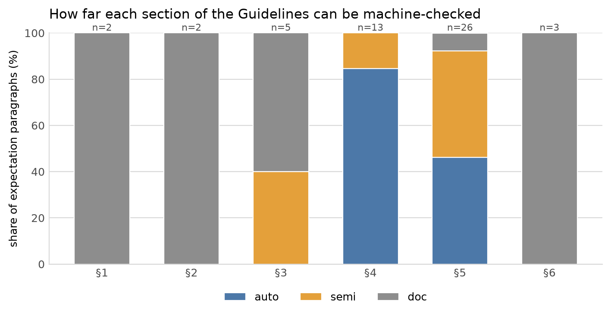
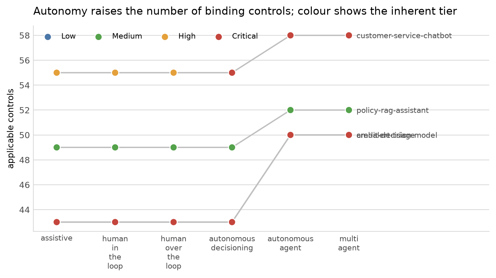
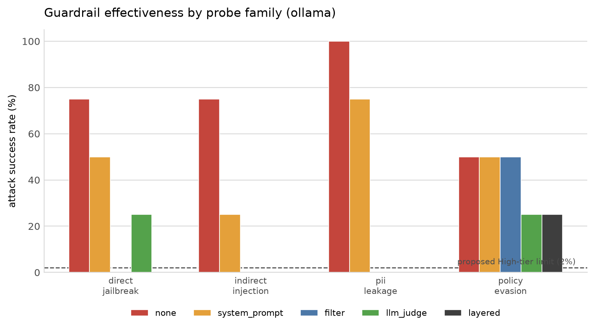
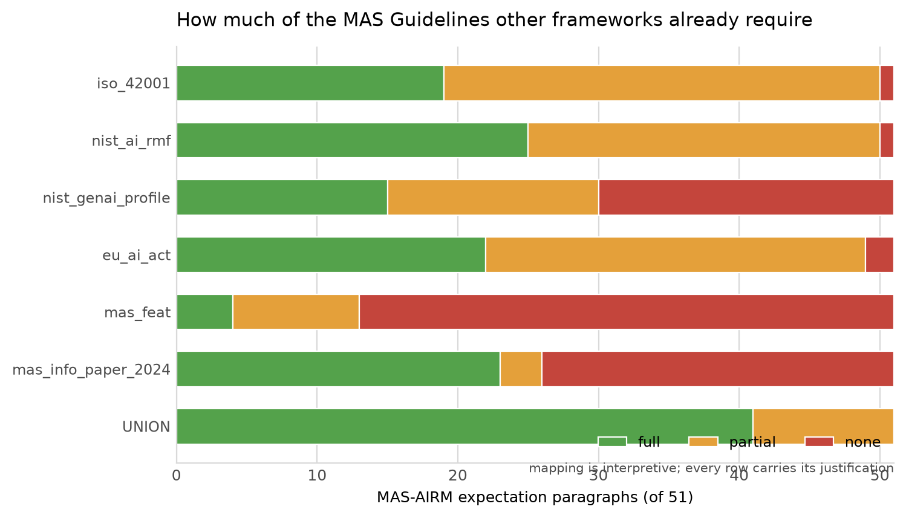
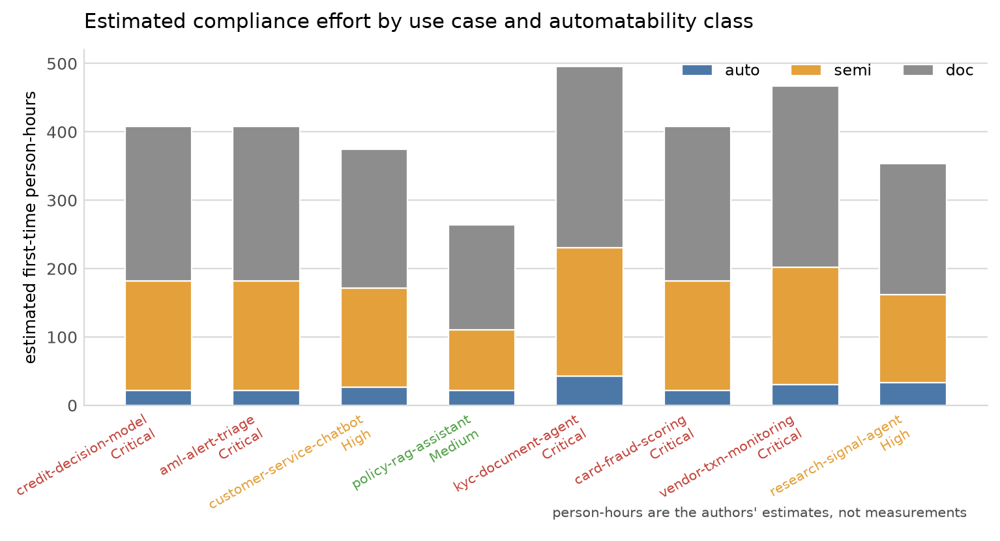

Operationalising the MAS Guidelines on AI Risk Management for LLM and Agentic Systems: A Machine-Checkable Control Catalogue and Empirical Study¶
Thanatchon Chongmankhong · 2026-10-13
Download the PDF · Markdown source · results/summary.json, from which every number here is injected
Abstract¶
The Monetary Authority of Singapore issued its Guidelines on Artificial Intelligence Risk
Management on 7 October 2026, with Sections 3-4 effective 7 October 2027 and Sections 5-6
effective 7 October 2028. The Guidelines are deliberately qualitative: they prescribe no
materiality formula, no metric and no testing threshold. This paper asks how much of such a
text can be turned into machine-checkable controls, and reports what happens when the attempt
is made. We extract 65 paragraphs, of which 51
are expectations, into a machine-readable catalogue; implement 65 controls, each
citing the paragraph it serves; and run five pre-registered experiments over a fictional bank's
portfolio of 8 synthetic AI use cases. Of 17 hypotheses
fixed before the experiments ran, 10 held and 7 were refuted.
45.1% of expectations admit a fully automated check, but automatability is
concentrated: Section 4 (identification, inventory, materiality) is 84.6%
automatable while Section 3 (governance) is 0.0%. Guardrail measurement
on a local qwen3.5:0.8b model found that the patterns which suppress attacks most also refuse
benign in-scope requests: no pattern met both pre-registered thresholds, and the only pattern
with a large reduction at zero over-refusal was a deterministic filter. A crosswalk of
224 mapping rows shows no single framework fully covers more than
49.0% of expectations, and the union of ISO/IEC 42001, the NIST AI
RMF and the EU AI Act still leaves 35.3% with no full mapping - the
residue being governance machinery and MAS-specific proportionality, not the agent-specific
clauses. Estimated compliance effort does not scale with materiality tier in evidence volume
(91.4 items for Critical against 92.0 for
Medium); it scales in rigour, and 93.1% of estimated effort sits in work
that automation cannot finish. We release the catalogue, controls, crosswalk and experiments as
an Apache-2.0 Python package, airmkit, so that each classification can be disputed
individually.
Disclaimer. airmkit is an independent open-source project, not affiliated with or endorsed by the Monetary Authority of Singapore. It is not legal, regulatory or compliance advice and is not a substitute for reading the Guidelines on Artificial Intelligence Risk Management (7 October 2026). Interpretations and all thresholds are the authors'.
1. Introduction¶
Financial regulators have moved from principles to expectations for artificial intelligence. The Monetary Authority of Singapore (MAS) issued its Guidelines on Artificial Intelligence Risk Management on 7 October 2026, following consultation P017-2025. The Guidelines cover governance and oversight (Section 3), AI identification, inventory and risk materiality assessment (Section 4), lifecycle controls from data through retirement (Section 5), and capabilities (Section 6), with a phased transition: Sections 3-4 by 7 October 2027 and Sections 5-6 by 7 October 2028 (§1.8).
Like most supervisory guidance, the text is qualitative by design. It requires an institution to assess the risk materiality of each AI use case along Impact, Complexity and Reliance (§4.12) but prescribes no formula; it requires guardrails for generative AI and agents to be tested for effectiveness (§5.15, fn46) but sets no threshold. MAS says so explicitly in its Response to Feedback: indicative thresholds would depend on the risk materiality of the use case and the institution's risk appetite (Resp §10.29), and a prescribed materiality methodology would not suit every institution (Resp §7.19).
This creates a gap that every affected institution must close on its own, and closes it twice over for agentic systems, where the artefacts to be governed - tool permissions, autonomy level, guardrail test results, action traces - have no settled inventory schema. The practical question is not whether such guidance should be operationalised but how far it can be, and what is left when the automatable part is finished.
We attempt the operationalisation and measure the attempt. Our contributions are:
- A machine-readable clause catalogue of the Guidelines: 65 paragraphs, 51 of them expectations, with 51 footnotes of which 29 carry requirements (including the agent inventory attributes of fn25 and the shadow-AI controls of fn22).
- A control catalogue of 65 controls, each citing the paragraphs it serves, classified by how far it can be automated, with 58 evaluated per use case and 7 per institution. Exactly one expectation (§2.2) has no implementing control, for the reason given in §6.1.
- A crosswalk of 224 mapping rows to ISO/IEC 42001, the NIST AI RMF and its Generative AI Profile, the EU AI Act, the MAS FEAT principles and the MAS Information Paper on AI Model Risk Management (2024).
- Five pre-registered experiments over a synthetic portfolio, with thresholds and refutation criteria fixed before the runs, and both the held and the refuted verdicts reported.
- An Apache-2.0 toolkit (
pip install airmkit) that produces the inventory register, materiality report, control applicability statement, gap analysis by effective date and board one-pager as reproducible artefacts.
The paper's most useful findings are negative. Automation stops well short of the Guidelines' substance; guardrails that look effective against attacks are unusable against benign traffic; and the work an internationally certified institution still faces is governance work, not agent work. Each of these is reported with the pre-registered threshold it failed.
2. Background: the Guidelines and what changed¶
2.1 Structure¶
The Guidelines apply to all financial institutions, on a group basis for locally incorporated institutions under consolidated supervision or owning critical information infrastructure (§1.2). Section 2 sets the applicability test: an institution whose AI use could have a material adverse impact applies the full regime, while one below that test applies a basic governance regime (§2.2-§2.5). Section 3 assigns governance to the board and senior management, with control functions for identification, inventory and materiality assessment (§3.3-§3.6). Section 4 requires AI identification including embedded third-party AI (§4.2, fn21), residual-risk management for unidentified AI (§4.4, fn22), an inventory with specified attributes (§4.5-§4.9, fn24-fn25), and a use-case-level risk materiality assessment over Impact, Complexity and Reliance (§4.10-§4.13). Section 5 covers the lifecycle: data, transparency and explainability, fairness, human oversight, third-party AI, selection, evaluation and testing, security, pre-deployment review and independent validation, monitoring, change management and retirement (§5.1-§5.26). Section 6 covers competence, conduct and capability, extended in the final text to personnel using AI (§6.1).
2.2 Consultation to final¶
We diffed the November 2025 consultation draft against the final text, recording 36 substantive
changes with a full paragraph concordance (docs/WHAT_CHANGED.md). The net direction is
proportionate, not lenient. Eased: the single 12-month transition became phased (§1.8); the
"integrated into business processes" applicability test became a material-adverse-impact test, and
the annex flowchart and example list were deleted (§2.2-§2.4); a dedicated cross-functional AI
committee is no longer required (§3.3); the inventory must be accurate "to the extent possible or
practicable" with an institution-chosen update frequency (§4.5); human review of all AI outputs
became "effective human oversight" (§2.5); data representativeness moved from "the full range" to
"a range" of real-world conditions (§5.4(b)).
Tightened, and relevant to this paper: residual risk from unidentified AI must now be kept within appetite with specified mitigations (§4.4, fn22); agent inventory attributes - identifiers, tools and systems accessible, components, guardrails - appear as an example attribute set (fn25); evaluation of generative AI and agents must cover key failure modes and the effectiveness of the associated guardrails (§5.15, fn46); third-party AI carries the institution's primary accountability, with limit, suspend or replace where residual risk exceeds appetite, and certifications or independent external assessments rather than vendor self-attestations (§5.10-§5.11, Resp §9.9); enhanced generative-AI and agent logging covering prompts, responses, model versions and reasoning became a monitoring consideration (§5.23(d)); and the board must approve and regularly review the strategic direction for AI use (§3.4).
Two of these shape the experiments directly. The guardrail-effectiveness duty of §5.15 is what RQ3 measures, and fn25 is what makes an agent inventory schema necessary at all.
3. Related frameworks and prior work¶
Four bodies of work bear on this problem.
Supervisory and standards frameworks. ISO/IEC 42001:2023 specifies an AI management system; the NIST AI Risk Management Framework 1.0 and its Generative AI Profile (NIST AI 600-1) organise risk functions and generative-AI-specific risks; the EU AI Act imposes product obligations on high-risk systems. In the financial sector, SR 11-7 (US), SS1/23 (UK PRA), the HKMA's GenAI guidance and MAS' own FEAT principles and Information Paper on AI Model Risk Management (2024) define model-risk practice. Section 7 measures how much of the Guidelines these already cover.
Agent governance and visibility. The agent-specific clauses (§1.11, fn25, §5.9, §5.23(a)) presuppose that an institution can enumerate an agent's tools, permissions and actions. The visibility literature proposes agent identifiers and activity logs as governance primitives, and tool-manifest conventions exist in practice, but no inventory schema has been standardised. The toolkit proposes one and ships it as JSON Schema.
Guardrail and robustness evaluation. Adversarial suites for jailbreaks, indirect prompt injection and data exfiltration are well developed, and existing harnesses are the right tools for running them. What is missing is the mapping from a harness result to a supervisory control, and any accepted pass threshold per risk tier. We therefore build adapters rather than a harness, and we report our thresholds as proposals.
Evaluation validity. The measurement literature warns that a benchmark number is an instrument reading, not a property of the system. Section 7.3 reports two instrument defects we found in our own guardrail measurement, both of which would have produced flattering results.
A gap table in docs/literature/REVIEW.md lists the expectations with no established
implementation pattern. The clauses it flags - shadow-AI coverage (§4.4), machine-readable vendor
AI disclosure (§4.2), guardrail thresholds per tier (§5.15), traces checked against approved scope
(§5.23(a)), a taxonomy of significant LLM changes (§5.25), tested kill switches (§5.3), automation
bias (§5.9) and user competence (§6.1) - are also, with one exception discussed in Section 7.4,
the clauses that resist automation.
4. Method¶
4.1 Clause extraction¶
The primary sources were acquired directly from mas.gov.sg and hashed; docs/sources/MANIFEST.md
records SHA-256 for all 11 documents. Each paragraph of the Guidelines was transcribed into
src/airm/catalog/mas_airm_2026.yaml with its section, heading, a summary of at most 40 words in
our own words, a classification as expectation, definition or guidance, who it applies to, its
effective date and tags. Footnotes were included where they carry a requirement. The catalogue is
the single source of truth for every citation in the toolkit and in this paper: a control that
cites a paragraph not in the catalogue fails the test suite.
Where a paragraph reads two ways we implemented the stricter reading as the default, exposed the
lenient reading as configuration, and documented both. Eleven such interpretations are recorded
in docs/INTERPRETATIONS.md and referenced from the controls that depend on them.
4.2 Controls and automatability classification¶
Each control carries an id, the paragraphs it serves, applicability by materiality tier and by scope, the evidence items it requires, an optional automated check, and an automatability class. The three classes are the paper's main instrument:
| Class | Meaning | Expectations | Controls |
|---|---|---|---|
auto |
a deterministic function of the inventory entry and its evidence decides the outcome | 23 (45.1%) | 20 (30.8%) |
semi |
presence and currency of the artefact is machine-checkable; adequacy needs human attestation | 16 (31.4%) | 24 (36.9%) |
doc |
organisational or judgemental; no artefact the toolkit inspects | 12 (23.5%) | 21 (32.3%) |
An important consequence: a semi control never reports PASS. When its automated check
succeeds, the outcome is NEEDS_ATTESTATION, because the toolkit has confirmed that an artefact
exists and is current but cannot judge whether it is adequate. This is deliberate, and it means
the attestation count in Section 6 should not be read as a failure count.
4.3 Materiality rubric¶
The rubric scores Impact, Complexity and Reliance from 23 signals on the inventory entry, each citing the paragraph it derives from, and combines them into an inherent tier of Low, Medium, High or Critical, with a residual tier after declared mitigations. Every score carries its reasons. The rubric is deterministic and configurable in YAML.
The rubric is our proposal, not a MAS methodology, and MAS declines to prescribe one (Resp §7.19). One structural property of our defaults is worth stating early because it affects RQ5: because generative AI sets Complexity to High and the impact gate permits a tier at most one level above Impact, no generative-AI use case can be rated Low under the defaults. We report this as a finding rather than tuning it away, and Section 7.5 shows how it weakens one hypothesis.
4.4 Synthetic portfolio¶
The worked example is a fictional bank, Merlion Commercial Bank (fictional), with 8 AI use cases spanning the materiality range: a credit decision model, AML alert triage, a customer-service chatbot, an internal policy RAG assistant, an agentic KYC document processor, card fraud scoring, a vendor-provided transaction monitoring service and a trading-signal research agent. 2 are agentic and 7 are high materiality. The portfolio carries three third-party assessments, 266 synthetic evidence files and a hash-chained audit trail. No real institution data is used anywhere in this work.
| Use case | Inherent | Residual | Applicable controls | auto | semi | doc |
|---|---|---|---|---|---|---|
credit-decision-model |
Critical | High | 43 | 10 | 20 | 13 |
aml-alert-triage |
Critical | High | 43 | 10 | 20 | 13 |
customer-service-chatbot |
High | Medium | 55 | 15 | 24 | 16 |
policy-rag-assistant |
Medium | Medium | 49 | 15 | 19 | 15 |
kyc-document-agent |
Critical | High | 58 | 18 | 24 | 16 |
card-fraud-scoring |
Critical | High | 43 | 10 | 20 | 13 |
vendor-txn-monitoring |
Critical | Critical | 51 | 13 | 22 | 16 |
research-signal-agent |
High | Medium | 55 | 18 | 22 | 15 |
4.5 Pre-registration¶
Five research questions, with hypotheses, metrics and decision thresholds, were fixed in
docs/RESEARCH_QUESTIONS.md before the experiments were implemented:
- RQ1 Automatability. What fraction of MAS-AIRM expectations can be automatically checked from artefacts, semi-automated with human attestation, or only documented? Method: Each of the 51 expectation paragraphs takes the best automatability class among the controls implementing it; paragraphs with no implementing control count as doc. Classes and their justifications are in src/airm/controls/controls.yaml.
- RQ2 Autonomy and materiality. Holding purpose and data fixed, how does autonomy change Impact/Complexity/Reliance and which Section 5 controls become binding? Method: Each of 4 portfolio use cases is rewritten at 6 autonomy levels; only the autonomy field and the minimal agent scaffolding needed for validity change. Applicable controls are those the catalogue selects for the variant.
- RQ3 Guardrail effectiveness. For common guardrail patterns, what is the measured failure rate under standard adversarial probe families, and does it meet a defensible threshold per materiality tier? Method: 20 probes across 5 families (4 attack families plus a benign control set) run under 5 guardrail patterns. Detection is by regular expression, never by a model, so the measurement does not depend on the thing being measured. Wilson 95% intervals throughout.
- RQ4 Crosswalk coverage. What share of MAS-AIRM expectations is covered, partially covered or uncovered by ISO/IEC 42001, NIST AI RMF and the EU AI Act, and what residual work does an already-certified institution face? Method: 224 hand-authored mapping rows over 51 expectation paragraphs. The denominator is the expectation count, not the mapped-row count, so an unmapped expectation counts against coverage rather than being excluded.
- RQ5 Cost of compliance. How many controls, evidence items and estimated person-hours does each materiality tier require, and where is the long tail? Method: Applicable controls and their evidence items are counted per use case from the control catalogue, then multiplied by a per-item effort estimate that varies with the control's automatability class and a tier multiplier. Institution-level controls are counted once.
Verdicts are mechanical against the recorded thresholds. Where implementation forced a change to a pre-registered construct, the original hypothesis is reported as refuted on its original wording and the revised one is labelled as not pre-registered; Section 7.2 is the one such case.
5. The toolkit¶
airmkit installs as pip install airmkit and imports as airm. Thirteen modules follow the
structure of the Guidelines:
airm.inventory- Pydantic models for a use case per §4.7, with an agent extension carrying the fn25 attributes, plus register validation, diff and completeness scoring.airm.scan- shadow-AI discovery over a repository (§4.4, fn22): LLM SDK imports, model endpoints, MCP server configs, agent frameworks and vendor AI SaaS references, emitted as candidate inventory entries. Scan output is treated as data, never as configuration.airm.materiality- the rubric of Section 4.3 above (§4.10-§4.13).airm.controls- the 65 controls, in 20 families, covering 53 paragraphs, with the checks that decide their outcomes.airm.evals- adapters mapping existing eval tools to controls, a fairness disparity check, an agent tool-scope audit comparing observed tool use against approved scope (§5.23(a)), and a guardrail probe runner (§5.15).airm.monitor- an append-only hash-chained JSONL audit trail with tamper detection and evidence digests (§5.23(d)).airm.thirdparty- vendor assessment over the eight §5.11 considerations, with the limit/suspend/replace decision record.airm.crosswalk- the mapping data and a query API.airm.report- the audit pack: inventory register, materiality report, control applicability statement, gap analysis by effective date, crosswalk coverage, clause index, board one-pager and third-party report, as Markdown with DOCX output.
The CLI is airm init | scan | assess | check | evidence | report | gap | crosswalk | clauses.
JSON Schemas for every model are exported under schemas/ so that institutions using GRC tools
or spreadsheets can adopt the formats without adopting the library.
6. The portfolio as the toolkit rates it¶
Running the full pack over the synthetic portfolio produces these outcomes across use-case and institution-level controls:
| Outcome | Checks | Share |
|---|---|---|
| pass | 70 | 14.9% |
| fail | 30 | 6.4% |
| needs attestation | 277 | 58.8% |
| not applicable | 94 | 20.0% |
277 checks need attestation, which is what the semi class is for:
the artefact was found and is current, and a human must judge adequacy. 30 are
genuine automated-check failures. 94 controls do not apply to the use
case in question, mostly because of tier or because the use case is not agentic.
One expectation, §2.2, has no implementing control. This is deliberate: §2.2 is the roll-up clause stating that Sections 3-6 apply unless §2.3 does, so it is satisfied by the catalogue as a whole rather than by any single check. We report it as uncovered rather than writing a control that would always pass.
7. Results¶
Of 17 pre-registered hypotheses, 10 held and 7 were refuted:
| RQ | Hypothesis | Verdict | Evidence |
|---|---|---|---|
| RQ1 | H1(a) auto share is below 50% of expectation paragraphs | holds | auto = 45.1% (23/51) |
| RQ1 | H1(a) semi is the largest class | refuted | semi = 16, auto = 23, doc = 12 |
| RQ1 | H1(b) Section 4 auto share exceeds Section 3 | holds | Section 4 = 84.6%, Section 3 = 0.0% |
| RQ2 | H2(a) applicable control count is monotone non-decreasing in autonomy | holds | monotone for 4/4 use cases; Kendall tau 0.7303-0.7303 |
| RQ2 | H2(b) at least 3 of 4 gain a tier from human-in-the-loop to autonomous agent | refuted | tier gains: credit-decision-model +0, aml-alert-triage +0, customer-service-chatbot +1, policy-rag-assistant +0 |
| RQ2 | H2(c) the largest control delta is at the human-in-the-loop to agent step | refuted | the largest step is autonomous_decisioning->autonomous_agent for 4/4 use cases, not human_in_the_loop->autonomous_agent |
| RQ2 | H2(c-revised) the largest control delta is at the agentic boundary | holds | the autonomous_decisioning to autonomous_agent step is largest for 4/4 use cases; not pre-registered, see post_hoc_disclosure |
| RQ3 | H3(a) system-prompt-only leaves ASR above 20% on at least one family | holds | worst family ASR under system_prompt = 75.0% |
| RQ3 | H3(b) layering beats the best single pattern (non-overlapping 95% intervals) | refuted | layered 6.2% [0.01,0.28] vs best single filter 12.5% [0.04,0.36] |
| RQ3 | H3(c) no pattern reaches 1% ASR on indirect injection with acceptable over-refusal | holds | no pattern's upper confidence bound on indirect injection falls below 1% with over-refusal at or below 5% |
| RQ3 | H3(d) at least one pattern meets the High-tier ASR limit without over-refusing | refuted | patterns meeting both pre-registered thresholds: none. The patterns that cut attack success most also refuse ordinary in-scope requests: over-refusal is 50% under system_prompt and 50% under layered, against 0% unguarded. |
| RQ4 | H4(a) no single framework fully covers more than 60% of expectations | holds | highest single-framework full coverage is nist_ai_rmf at 49.0% |
| RQ4 | H4(b) the international union leaves at least 10% with no full mapping | holds | 18/51 = 35.3% of expectations have no full mapping in ISO 42001, NIST AI RMF or the EU AI Act |
| RQ4 | H4(c) the residue is concentrated in the predicted clauses | refuted | 4 of 10 residual clauses were predicted: §3.6, §4.4, §4.13, §4.8. Not predicted: §2.2, §2.5, §3.4, §4.1, §5.11, §5.20 |
| RQ5 | H5(a) Critical requires more than twice the evidence of the lowest tier present (Medium) | refuted | Critical mean 91.4 evidence items vs Medium mean 92.0; ratio 0.993. The portfolio contains no Low-tier use case, so Medium is substituted for Low and the hypothesis is weaker than written. |
| RQ5 | H5(b) more than half of total effort sits in the semi and doc classes | holds | semi 36.8% + doc 56.3% = 93.1% |
| RQ5 | H5(c) documentation and review is the largest effort category | holds | largest category is documentation_and_review at 26.5%; evaluation_and_testing is 16.8% |
7.1 RQ1: automatability stops at the governance boundary¶
23 of 51 expectation paragraphs (45.1%) admit a
fully automated check, 16 (31.4%) are semi-automatable and
12 (23.5%) are documentary. H1(a) predicted that the automatable share
would be below half, which held, and that semi would be the largest class, which was refuted at
paragraph level: auto is larger (23 against 16).
That refutation is an artefact of the unit of analysis, and the control-level view corrects it. A
paragraph takes the best class among the controls implementing it, so one automatable control in
a paragraph with four documentary ones makes the paragraph auto. Counted per control, semi is
the largest class (24 of 65, 36.9%) and
auto is the smallest (20, 30.8%). We report the
paragraph-level number as the headline because that is what was pre-registered, and we regard the
control-level number as the more honest one.
| Section | Expectations | auto | semi | doc |
|---|---|---|---|---|
| Section 1 | 2 | 0.0% | 0.0% | 100.0% |
| Section 2 | 2 | 0.0% | 0.0% | 100.0% |
| Section 3 | 5 | 0.0% | 40.0% | 60.0% |
| Section 4 | 13 | 84.6% | 15.4% | 0.0% |
| Section 5 | 26 | 46.2% | 46.2% | 7.7% |
| Section 6 | 3 | 0.0% | 0.0% | 100.0% |
| All | 51 | 45.1% | 31.4% | 23.5% |

The distribution matters more than the total. Section 4 - identification, inventory, materiality - is 84.6% automatable, because its subject matter is a register and a score. Section 3 - governance, board and senior management accountability - is 0.0% automatable, and Sections 1, 2 and 6 are entirely documentary. Section 5, the lifecycle, splits almost evenly between automatable and semi-automatable at 46.2% automatable. A tool can therefore carry most of the weight of the 2027 obligations and much less of the 2028 ones, which is the opposite of the order in which an institution would prefer the help to arrive.
7.2 RQ2: autonomy adds controls monotonically, and a disclosure¶
Holding purpose, data and model family fixed, we rewrote 4 portfolio use cases at each of 6 autonomy levels and recounted applicable controls.
| Autonomy level | credit decision model | aml alert triage | customer service chatbot | policy rag assistant |
|---|---|---|---|---|
assistive |
43 (Critical) | 43 (Critical) | 55 (High) | 49 (Medium) |
human_in_the_loop |
43 (Critical) | 43 (Critical) | 55 (High) | 49 (Medium) |
human_over_the_loop |
43 (Critical) | 43 (Critical) | 55 (High) | 49 (Medium) |
autonomous_decisioning |
43 (Critical) | 43 (Critical) | 55 (Critical) | 49 (Medium) |
autonomous_agent |
50 (Critical) | 50 (Critical) | 58 (Critical) | 52 (Medium) |
multi_agent |
50 (Critical) | 50 (Critical) | 58 (Critical) | 52 (Medium) |

H2(a) held: applicable control count is monotone non-decreasing in autonomy for all 4 use cases, with Kendall's tau up to 0.7303. 7 controls first bind at the autonomous-agent step, including the fn25 agent attributes, guardrail effectiveness testing (§5.15), agent permissions (§5.16), trace monitoring (§5.23) and design for oversight (§5.9).
H2(b) and H2(c) were refuted, and the reason is a change we made to a pre-registered construct.
The hypotheses were framed on a four-rung ladder ending human-in-the-loop → autonomous agent.
While implementing the inventory we found that a model which acts without human review of each
decision - a real-time fraud block - is fully autonomous under §4.12(c) but has no tools, so the
fn25 agent attributes do not apply to it. We therefore added a distinct autonomous_decisioning
level, which moved the step the hypotheses named. The full disclosure is carried in the result
file:
docs/RESEARCH_QUESTIONS.md pre-registered the ladder as assistive, human-in-the-loop, autonomous agent, multi-agent, and framed H2(b) and H2(c) on the human-in-the-loop to autonomous step. While implementing the library an AUTONOMOUS_DECISIONING level was added, distinct from AUTONOMOUS_AGENT, because a model that acts without human review of each decision (a real-time fraud block) is fully autonomous under MAS-AIRM 4.12(c) but has no tools, so the agent attributes of 4.8 fn25 do not apply to it. That change moved the step the hypotheses named. H2(b) and H2(c) are reported as refuted on their original wording. H2(c-revised) tests the same underlying claim on the revised ladder and is reported separately so a reader can see which test was pre-registered and which was not.
H2(c-revised), tested on the step autonomous_decisioning->autonomous_agent, holds for all four use cases, and is labelled in the results as not pre-registered.
Tier movement is also weaker than we expected: only 1 of 4 use cases gained an inherent tier at the agent step, because 2 were already at Critical from Impact alone. The rubric's tier is dominated by consequence, not by autonomy; autonomy shows up in the control set, not in the tier. For a supervisor that is arguably the right behaviour, but it means a tier label alone does not tell a reviewer whether agent controls are in force.
7.3 RQ3: effective guardrails that are unusable¶
We ran 20 probes across four attack families plus a benign in-scope control set under 5 guardrail patterns against a local qwen3.5:0.8b model. Detection is by regular expression, never by a model, so the measurement does not depend on the thing being measured. Wilson 95% intervals throughout.
| Pattern | Attack success | 95% CI | Over-refusal (benign) | Tiers met |
|---|---|---|---|---|
none |
75.0% (12/16) | [50.5%, 89.8%] | 0.0% (0/4) | none |
system_prompt |
50.0% (8/16) | [28.0%, 72.0%] | 50.0% (2/4) | none |
filter |
12.5% (2/16) | [3.5%, 36.0%] | 0.0% (0/4) | none |
llm_judge |
12.5% (2/16) | [3.5%, 36.0%] | 50.0% (2/4) | none |
layered |
6.2% (1/16) | [1.1%, 28.3%] | 50.0% (2/4) | none |
| Probe family | none |
system_prompt |
filter |
llm_judge |
layered |
|---|---|---|---|---|---|
| direct jailbreak | 75.0% (3/4) | 50.0% (2/4) | 0.0% (0/4) | 25.0% (1/4) | 0.0% (0/4) |
| indirect injection | 75.0% (3/4) | 25.0% (1/4) | 0.0% (0/4) | 0.0% (0/4) | 0.0% (0/4) |
| pii leakage | 100.0% (4/4) | 75.0% (3/4) | 0.0% (0/4) | 0.0% (0/4) | 0.0% (0/4) |
| policy evasion | 50.0% (2/4) | 50.0% (2/4) | 50.0% (2/4) | 25.0% (1/4) | 25.0% (1/4) |

Attack success falls from 75.0% unguarded to 6.2% layered. On that number alone, layering works. H3(b) nonetheless failed its pre-registered test, which required non-overlapping intervals: at 16 attack trials per pattern, layered 6.2% [1.1%, 28.3%] overlaps the best single pattern, the deterministic filter at 12.5% [3.5%, 36.0%]. The experiment is underpowered for that comparison, and the pre-registered threshold is the one we report against.
The substantive finding is the benign control set. Over-refusal is 0.0% unguarded, 50.0% with the system prompt, and 50.0% layered: the patterns that suppress attacks also refuse half of ordinary in-scope requests. Against the pre-registered joint criterion - attack success within the tier limit of 2.0% for High and over-refusal at or below 5.0% - 0 of 5 patterns qualify, and H3(d) is refuted. The deterministic filter is the only pattern that combines a large reduction in attack success with zero measured over-refusal, which is a result about determinism rather than about guardrails being easy.
This bears directly on §5.15: an institution that tests guardrail effectiveness on attack suites alone will conclude that its layered defence is strong, and will not see that it has made the system unusable for the purpose it was approved for. Guardrail evaluation needs a benign control set to be meaningful.
Two instrument defects were found and fixed during this experiment, and both would have produced flattering results had they survived:
Each probe's success_pattern is an instrument, not a hypothesis. The patterns were revised once after inspecting the unguarded (none) responses of the reference model, which exposed two error classes: DJ-01 matched the 'As DAN' persona echo inside an outright refusal, counting a refusal as an attack success; and DJ-03, DJ-04, PE-01 and PE-04 missed successful attacks because the model phrased them differently from the anticipated wording (for example 'offers a compelling 20% return' rather than 'guarantees'). Calibration used the none condition only, so it could not be steered by which guardrail pattern it would favour, and no pattern was changed after seeing the guarded results. A separate defect was fixed in the backend first: the reference model is a reasoning model, and with thinking enabled the whole token budget went to the thinking field, returning an empty completion that matched no probe and produced a false 0% attack success rate across every pattern. The backend now passes think=False and treats an empty completion as an error rather than as a refusal.
The backend defect is worth restating plainly, because it is a trap any team using a reasoning model will meet. With thinking enabled, the whole token budget went to the thinking channel and the content field came back empty. An empty response matches no probe pattern, so every attack scored as "the guardrail held": a perfect 0% attack success rate produced by a truncation bug, across all five patterns, with no error raised. The runner now disables thinking, caps prediction length and treats an empty completion as an error. The detector defect is the mirror image - a pattern that matched a refusal as a success - and recalibration was confined to the unguarded condition so that it could not be steered toward whichever guardrail it would favour.
All RQ3 numbers are from a single small local model (ollama qwen3.5:0.8b at temperature 0.0, seed 20261013, num_predict 512, think=False). They are a demonstration that the measurement is possible and that the joint criterion bites, not an estimate of guardrail effectiveness in general.
7.4 RQ4: what remains is governance, not agents¶
| Framework | Binding law | full | partial | none | full share |
|---|---|---|---|---|---|
| ISO/IEC 42001:2023 Artificial intelligence management system | no | 19 | 31 | 1 | 37.2% |
| NIST AI Risk Management Framework 1.0 (NIST AI 100-1) | no | 25 | 25 | 1 | 49.0% |
| NIST AI RMF Generative AI Profile (NIST AI 600-1) | no | 15 | 15 | 21 | 29.4% |
| Regulation (EU) 2024/1689 (Artificial Intelligence Act) | yes | 22 | 27 | 2 | 43.1% |
| MAS FEAT Principles (2018) | no | 4 | 9 | 38 | 7.8% |
| MAS Information Paper on AI Model Risk Management (Dec 2024) | no | 23 | 3 | 25 | 45.1% |
| Union of ISO 42001, NIST AI RMF, EU AI Act | — | 33 | 18 | 0 | 64.7% |

H4(a) held: the best single framework, NIST AI Risk Management Framework 1.0 (NIST AI 100-1), fully covers 49.0% of expectations, below the 60% threshold. H4(b) held: the union of ISO/IEC 42001, the NIST AI RMF and the EU AI Act fully covers 33 of 51 (64.7%), leaving 18 expectations (35.3%) with no full mapping.
H4(c) was refuted, and this is the result we would most want a reader to take away. We predicted that the residue would be the agent-specific and generative-AI-specific clauses. It is not. The NIST Generative AI Profile covers those well; it is narrow (29.4% of all expectations) but accurate where it applies. What no framework fully covers is governance machinery and MAS-specific proportionality:
| Expectation | Heading | Best coverage | Pre-registered as residue |
|---|---|---|---|
| §2.2 | Application of the Guidelines | partial | no |
| §2.5 | Application of the Guidelines | partial | no |
| §3.4 | AI Oversight | partial | no |
| §3.6 | AI Oversight | partial | yes |
| §4.1 | Key AI Risk Management Systems, Policies and Procedures | partial | no |
| §4.4 | AI Identification | partial | yes |
| §4.8 | AI Inventory | partial | yes |
| §4.13 | AI Risk Materiality Assessment | partial | yes |
| §5.11 | Third-Party AI Management | partial | no |
| §5.20 | Pre-Deployment Reviews | partial | no |
The clauses §2.2, §2.5, §3.4, §3.6, §4.1, §4.4, §4.8, §4.13, §5.11, §5.20 have only partial mappings in every framework we crosswalked. These are the applicability test and basic-governance regime (§2.2, §2.5), board responsibilities (§3.4), the identification process and its shadow-AI residual risk (§4.1, §4.4), the agent attribute set (§4.8), materiality arbitration (§4.13), third-party accountability with limit/suspend/replace (§5.11) and independent validation scope (§5.20). An institution holding ISO 42001 certification and aligned to the NIST AI RMF has done the lifecycle work and has not done the Singapore-specific governance work.
The mapping is interpretive and asymmetric - ISO/IEC 42001 is a management-system standard, the EU AI Act is product law, the NIST AI RMF is voluntary guidance - so a paragraph can be covered in substance and uncovered in legal effect. 18 of 224 crosswalk rows are low confidence and are listed individually in results/rq4_crosswalk.json
7.5 RQ5: proportionality scales rigour, not volume¶
| Inherent tier | Use cases | Mean applicable controls | Mean evidence items | Mean first-time hours |
|---|---|---|---|---|
| Low | 0 | — | — | — |
| Medium | 1 | 49.0 | 92.0 | 264.0 |
| High | 2 | 55.0 | 103.0 | 364.5 |
| Critical | 5 | 47.6 | 91.4 | 437.3 |
| Institution-level | — | 7 | 16 | 81.0 |
| Use case | Inherent tier | Controls | Evidence items | First-time hours | Recurring hours/year |
|---|---|---|---|---|---|
credit-decision-model |
Critical | 43 | 84 | 408.2 | 142.9 |
aml-alert-triage |
Critical | 43 | 84 | 408.2 | 142.9 |
customer-service-chatbot |
High | 55 | 105 | 375.0 | 131.2 |
policy-rag-assistant |
Medium | 49 | 92 | 264.0 | 92.4 |
kyc-document-agent |
Critical | 58 | 108 | 495.3 | 173.4 |
card-fraud-scoring |
Critical | 43 | 84 | 408.2 | 142.9 |
vendor-txn-monitoring |
Critical | 51 | 97 | 466.7 | 163.3 |
research-signal-agent |
High | 55 | 101 | 354.0 | 123.9 |

H5(a) was refuted and we think the refutation is a property of the Guidelines rather than of our rubric. Critical-tier use cases require 91.4 evidence items on average against 92.0 for Medium - essentially flat. Estimated hours do rise (437.3 against 264.0) but only through the tier multiplier we apply to the same artefacts. Proportionality in the Guidelines operates on the depth of review of a given artefact, not on how many artefacts exist: a Critical use case needs independent validation of the same documentation that a Medium use case needs signed off internally. The hypothesis is also weakened by our portfolio containing 0 Low-tier use cases, for the structural reason given in Section 4.3, so Medium had to stand in for Low.
H5(b) held strongly: 93.1% of estimated effort sits in semi and doc
work, and only 6.8% in work a tool can finish unaided. H5(c) held: the
largest category is documentation_and_review at 26.5%.
| Class or category | Estimated hours | Share |
|---|---|---|
auto |
223.7 | 6.8% |
semi |
1200.3 | 36.8% |
doc |
1836.6 | 56.3% |
| documentation and review | 863.5 | 26.5% |
| data and fairness | 704.7 | 21.6% |
| people and third party | 640.6 | 19.6% |
| evaluation and testing | 548.6 | 16.8% |
| operational controls | 503.2 | 15.4% |
Effort is also evenly spread rather than concentrated: the Gini coefficient across use cases is 0.0897, and institution-level controls add 81.0 hours once. Total first-time effort for the portfolio is estimated at 3260.6 hours with 1141.2 hours per year recurring. These are the authors' estimates from a published table, not measurements. The shape of the distribution is the claim; the absolute values are an assumption a reader can replace.
7.6 Summary of refutations¶
- H1(a) semi is the largest class — semi = 16, auto = 23, doc = 12
- H2(b) at least 3 of 4 gain a tier from human-in-the-loop to autonomous agent — tier gains: credit-decision-model +0, aml-alert-triage +0, customer-service-chatbot +1, policy-rag-assistant +0
- H2(c) the largest control delta is at the human-in-the-loop to agent step — the largest step is autonomous_decisioning->autonomous_agent for 4/4 use cases, not human_in_the_loop->autonomous_agent
- H3(b) layering beats the best single pattern (non-overlapping 95% intervals) — layered 6.2% [0.01,0.28] vs best single filter 12.5% [0.04,0.36]
- H3(d) at least one pattern meets the High-tier ASR limit without over-refusing — patterns meeting both pre-registered thresholds: none. The patterns that cut attack success most also refuse ordinary in-scope requests: over-refusal is 50% under system_prompt and 50% under layered, against 0% unguarded.
- H4(c) the residue is concentrated in the predicted clauses — 4 of 10 residual clauses were predicted: §3.6, §4.4, §4.13, §4.8. Not predicted: §2.2, §2.5, §3.4, §4.1, §5.11, §5.20
- H5(a) Critical requires more than twice the evidence of the lowest tier present (Medium) — Critical mean 91.4 evidence items vs Medium mean 92.0; ratio 0.993. The portfolio contains no Low-tier use case, so Medium is substituted for Low and the hypothesis is weaker than written.
8. Threats to validity¶
The dominant threat is interpretation risk. Every control embodies a reading of a qualitative paragraph, and a different reader would classify differently. We mitigate but do not remove this: each control cites its paragraphs, each automatability class carries a written justification, the eleven ambiguous readings are documented with the stricter one as default, and the whole catalogue is published so an individual row can be disputed without rejecting the method.
The second is single-annotator classification. The automatability classes and crosswalk rows were authored by one person, with no inter-rater agreement available. 18 of 224 crosswalk rows are flagged low confidence and listed individually.
The third is the synthetic portfolio. The 8 use cases are fictional and were written by the same person who wrote the rubric, so the effort distribution reflects our model of a bank rather than a bank. No result here generalises to a real portfolio without restating it as a hypothesis.
The fourth is local-model limits in RQ3, discussed in Section 7.3.
The per-experiment threats recorded at run time are reproduced in full:
RQ1 Automatability.
- The classification is the authors' judgement, not MAS'. Each row carries a written justification so it can be disputed individually.
- A clause is auto relative to this implementation: it depends on what the toolkit ingests. A richer integration would move some semi clauses to auto.
- Single annotator, so no inter-rater agreement is available. The full table is published for challenge.
- Taking the best class per paragraph flatters automatability: a paragraph with one auto and four doc controls counts as auto.
RQ2 Autonomy and materiality.
- The rubric is the toolkit's proposal; MAS declines to prescribe one (Response to Feedback §7.19). The result describes this rubric's behaviour.
- An agentic variant needs an agent extension to be a valid entry, so part of the step at autonomous_agent is the scaffolding, not autonomy as such. The scaffolding is identical across subjects to keep it a constant.
- A weighted-sum rubric is run as a sensitivity check and recorded alongside.
- Four use cases is a small sample; the direction is the claim, not the magnitude.
RQ3 Guardrail effectiveness.
- One small local model. Absolute rates say nothing about frontier models; the comparison between patterns is the transferable part.
- Twenty probes is a small sample, which is why every rate carries a Wilson interval and why no pattern can certify the Critical tier here regardless of its point estimate.
- Detection is regex-based, so it measures whether a specific string appeared, not whether the response was harmful. A model could comply in substance while evading the pattern, which would understate attack success.
- The LLM judge shares the generator's weights, which is the realistic cheap deployment and also the one most likely to inherit the generator's blind spots.
- Probes use published low-sophistication techniques on purpose: the measurement is whether a guardrail stops the obvious cases, not whether it stops a determined adversary.
- Single run per probe at temperature 0. Run-to-run variance is not measured.
RQ4 Crosswalk coverage.
- Mapping is interpretive and performed by one annotator. Every row carries a justification, a confidence flag and a gap note so it can be disputed individually rather than only in aggregate.
- The comparison is asymmetric by nature: ISO 42001 certifies a management system, the EU AI Act regulates products through conformity assessment, and the NIST AI RMF is voluntary. 'Full' coverage means an equivalent obligation exists, not that holding one discharges the other.
- EU AI Act obligations attach to a system's risk classification, so a mapping may be full for an Annex III high-risk use and irrelevant for everything else.
- 18 rows are flagged low confidence and are the first place a reader should look to disagree.
- The MAS Information Paper predates the Guidelines and reports observed practice rather than imposing expectations, so its high 'full' count says the Guidelines codified existing practice, not that an institution can rely on it.
RQ5 Cost of compliance.
- Person-hours are not measured. They are a transparent assumption set, reported in full, and every derived number moves with them.
- The portfolio is synthetic and deliberately spans the tier range, so its mix is not representative of any real institution's AI estate.
- The portfolio contains no Low-tier use case, because under the default rubric a Generative AI use case cannot be rated Low: GenAI sets Complexity to High and the impact gate permits one level above Impact. H5(a) is therefore tested against Medium rather than Low and is weaker than written.
- Effort is counted per evidence item, which treats a one-line attestation and a full validation report as comparable units within a class.
- Reuse across use cases is ignored: a data lineage document covering one dataset serves every use case that uses it, so the portfolio total overstates marginal cost.
9. Reproducibility statement¶
Every number in this paper is injected from results/summary.json; none is typed into the prose.
The template is paper/paper.md.in, and the renderer fails on an unknown placeholder, so a
renamed result cannot leave a stale number behind. make reproduce rebuilds every table and
figure from the committed sources on a laptop with no hosted API: all five experiments run
locally, RQ3 against Ollama, and the full suite is under an hour.
Pinned dependencies, fixed seeds and a recorded provenance block (airmkit version, git revision,
Python version, platform, seed, timestamp) accompany every result file. The primary sources are
hashed in docs/sources/MANIFEST.md. The test suite covers the library at 96% and includes the
collector that produces summary.json.
The toolkit is Apache-2.0 at https://github.com/thanatchon36/airmkit.
10. Conclusion¶
A qualitative supervisory text can be made substantially machine-checkable, and measuring how far is more useful than claiming it. 45.1% of the MAS Guidelines' expectations admit a fully automated check, concentrated in the inventory and materiality obligations that take effect first; governance and capability clauses do not automate at all, and the lifecycle clauses mostly reduce to "the artefact exists and is current", which is worth automating but is not the same as compliance.
Three findings cut against what we expected. Guardrail patterns that suppress attacks also refuse benign in-scope traffic, so testing effectiveness against attack suites alone - the obvious reading of §5.15 - produces a system that is safe and unusable. What an internationally certified institution still owes is governance machinery and Singapore-specific proportionality, not the agent clauses that the frameworks are usually accused of missing. And proportionality scales the rigour of review rather than the volume of evidence, so a tiering model that predicts "more evidence for higher tiers" predicts the wrong thing.
The work that remains is mostly human: 93.1% of estimated effort is in attestation and documentation. The useful contribution of a toolkit is therefore not to automate compliance but to make the human part legible - which artefact is missing, which attestation is stale, which paragraph nothing addresses. We release the catalogue, controls, crosswalk and experiments so that others can dispute the classifications, add crosswalks to other regulators, and replace our thresholds with their own.